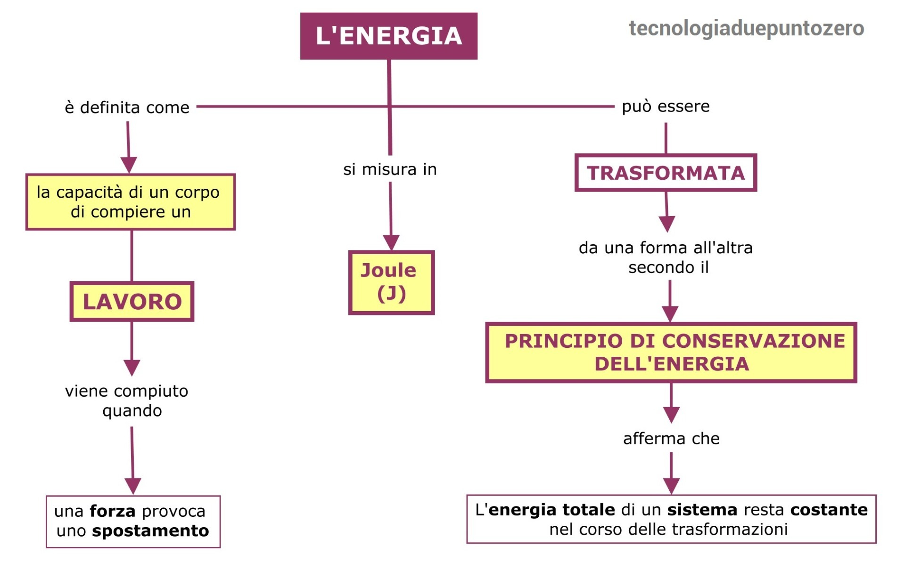
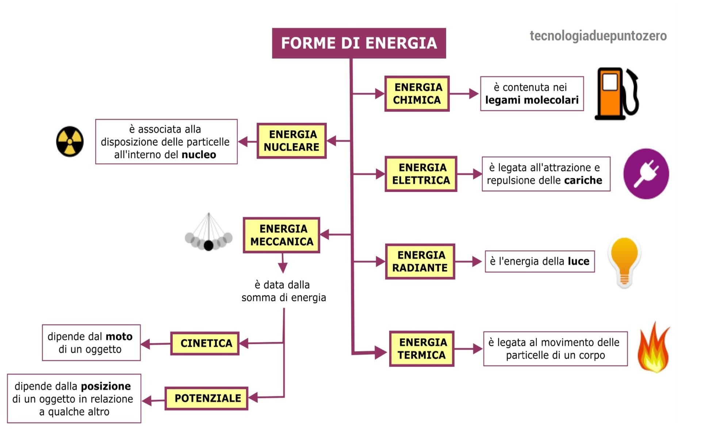

| |
ENERGIA
CHE COS'E ?
L'energia in generale è la capacità di un sistema o di un oggetto di compiere un lavoro o di produrre un cambiamento. Esistono diverse forme di energia, tra cui energia cinetica (legata al movimento), energia potenziale (legata alla posizione o allo stato), energia termica (legata alla temperatura), energia luminosa (legata alla luce), energia chimica (legata alle reazioni chimiche), e molte altre. L'energia non può essere creata né distrutta, ma solo trasformata da una forma all'altra secondo il principio di conservazione dell'energia.
COME FUNZIONA ?
L'energia non è qualcosa di tangibile, ma piuttosto una proprietà o una capacità di un sistema che consente di compiere un lavoro o produrre un cambiamento. Le leggi della fisica, in particolare il principio di conservazione dell'energia, stabiliscono che l'energia non può essere creata né distrutta, ma solo trasformata da una forma all'altra.
Le diverse forme di energia sono interconnesse e possono trasformarsi l'una nell'altra.L'energia può anche essere trasformata da una forma potenziale a una forma cinetica e viceversa.
In generale, le leggi della termodinamica governano il comportamento dell'energia nei sistemi fisici, fornendo regole su come l'energia può fluire e trasformarsi. L'energia può essere sfruttata per compiere lavoro, come nell'uso di motori o nella generazione di elettricità, contribuendo così a soddisfare varie esigenze nelle attività umane.
ENERGIA IDRAULICA
CHE COS'E ?
In generale, le leggi della termodinamica governano il comportamento dell'energia nei sistemi fisici, fornendo regole su come l'energia può fluire e trasformarsi. L'energia può essere sfruttata per compiere lavoro, come nell'uso di motori o nella generazione di elettricità, contribuendo così a soddisfare varie esigenze nelle attività umane.
COME FUNZIONA ?
L'energia idraulica, in particolare nell'ambito dell'energia idroelettrica, funziona attraverso il seguente processo:
Acquisizione dell'acqua: Viene creata una diga o uno sbarramento su un fiume per creare un bacino artificiale. Questo accumula grandi quantità d'acqua.
Controllo del flusso: Il rilascio controllato dell'acqua attraverso le turbine può essere regolato per gestire il flusso e la pressione dell'acqua.
Turbine: L'acqua viene fatta passare attraverso turbine. L'energia cinetica dell'acqua in movimento fa girare le pale della turbina, trasformando questa energia cinetica in energia meccanica.
Generazione di energia: La turbina è collegata a un generatore elettrico, che converte l'energia meccanica in energia elettrica mediante il principio dell'induzione elettromagnetica.
Trasmissione dell'energia: L'energia elettrica prodotta viene trasportata attraverso linee elettriche per essere distribuita e utilizzata nelle reti di alimentazione elettrica.
ESEMPI PRATICI:
Ecco alcuni esempi pratici di come viene utilizzata l'energia idraulica:
Centrali Idroelettriche a Sbarramento: Grandi dighe o sbarramenti vengono costruiti su fiumi per creare bacini d'acqua. Quando l'acqua viene rilasciata attraverso le turbine, genera energia elettrica. Un esempio noto è la diga delle Tre Gole in Cina.
Piccole Centrali Idroelettriche: In alcuni luoghi, vengono sfruttati piccoli flussi d'acqua per alimentare piccole centrali idroelettriche. Queste sono spesso utilizzate per fornire energia in aree remote o nelle comunità isolate.
Turbine Maree e Correnti Marine: Alcune tecnologie sfruttano l'energia delle maree e delle correnti marine. Le turbine vengono posizionate in aree con forti flussi di marea o correnti marine per generare energia.
Pompe ad Acqua: In alcuni sistemi di energia idraulica, l'acqua viene sollevata in serbatoi più alti durante i periodi di bassa domanda energetica e rilasciata durante i periodi di alta domanda, agendo come una sorta di "accumulatore" energetico.
Ruote ad Acqua:In passato, le ruote ad acqua venivano utilizzate per sfruttare l'energia idraulica per alimentare mulini e altre macchine. Sebbene non sia una tecnologia moderna su larga scala, alcune comunità possono ancora utilizzarla per applicazioni più piccole.
ENERGIA MECCANICA
CHE COS'E ?
L'energia meccanica totale di un sistema è la somma di energia cinetica ed energia potenziale. Secondo il principio di conservazione dell'energia meccanica, in un sistema isolato (senza perdite di energia sotto forma di attrito o resistenza), l'energia meccanica totale rimane costante. Quando un'energia si trasforma da cinetica a potenziale o viceversa, la somma rimane invariata.
In generale, l'energia meccanica è fondamentale per comprendere e descrivere il comportamento dei corpi in movimento e la loro interazione con le forze.
COME FUNZIONA ?
L'energia meccanica funziona attraverso il movimento e la posizione degli oggetti. Il suo funzionamento può essere spiegato attraverso i concetti di energia cinetica ed energia potenziale.
Energia Cinetica (KE): Quando un oggetto è in movimento, possiede energia cinetica. L'energia cinetica è proporzionale alla massa dell'oggetto e al quadrato della sua velocità. Quando un oggetto si muove, la sua energia cinetica aumenta con l'incremento della velocità.
Energia Potenziale (PE): Quando un oggetto è sollevato rispetto a un punto di riferimento, possiede energia potenziale gravitazionale. L'energia potenziale è direttamente proporzionale alla massa dell'oggetto, all'accelerazione di gravità e all'altezza rispetto al punto di riferimento. Quando un oggetto è sollevato, la sua energia potenziale aumenta.
ESEMPI PRATICI:
Ecco alcuni esempi pratici di macchinari che sfruttano l'energia meccanica:
Automobili: I motori delle automobili convertono l'energia chimica del carburante in energia meccanica, che viene poi utilizzata per muovere il veicolo.
Ascensori: Gli ascensori utilizzano motori elettrici per convertire l'energia elettrica in energia meccanica, sollevando o abbassando la cabina.
Torni e Fresatrici: In ambito manifatturiero, torni e fresatrici utilizzano motori per trasformare l'energia elettrica in energia meccanica, consentendo la lavorazione di materiali.
Ventilatori e Condizionatori d'aria: Questi dispositivi utilizzano motori elettrici per generare energia meccanica che muove le pale del ventilatore o aziona il compressore per regolare la temperatura dell'aria.
Generatori elettrici: I generatori utilizzano l'energia meccanica, spesso derivante dalla rotazione di una turbina idraulica o di una pala eolica, per generare energia elettrica.
 Schema funzionamento generale Energia  Schema elenco generale Energie |
 |